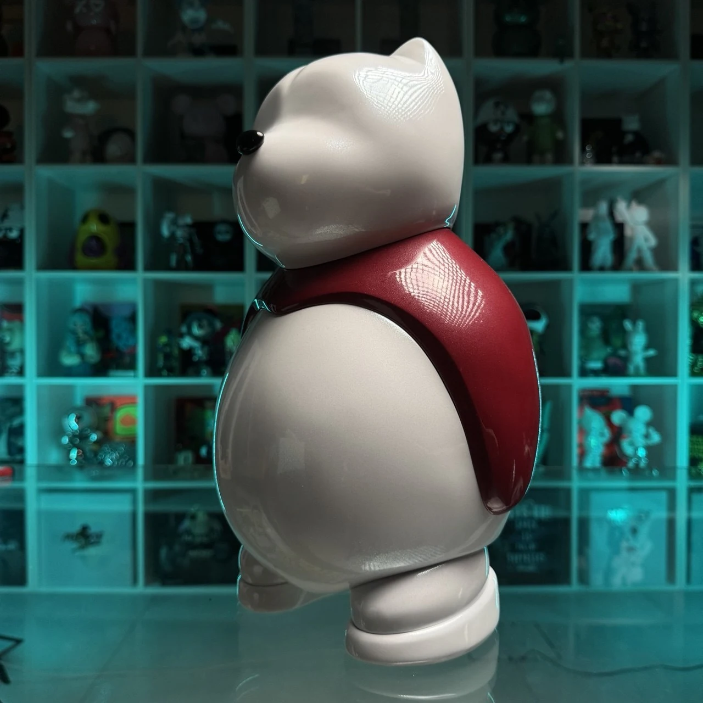
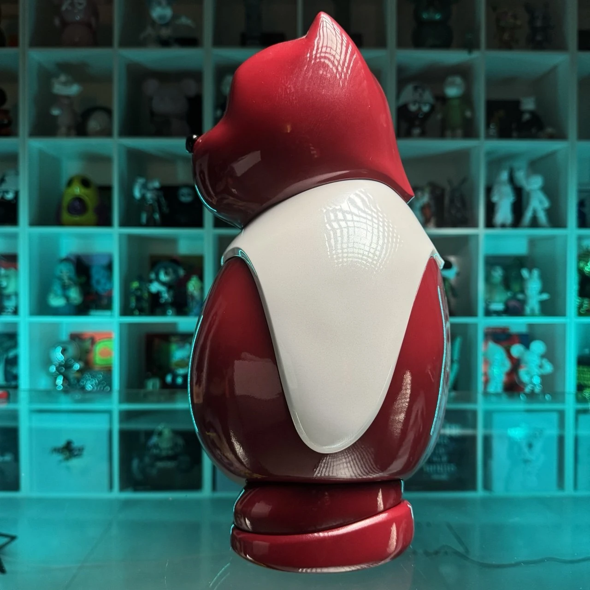
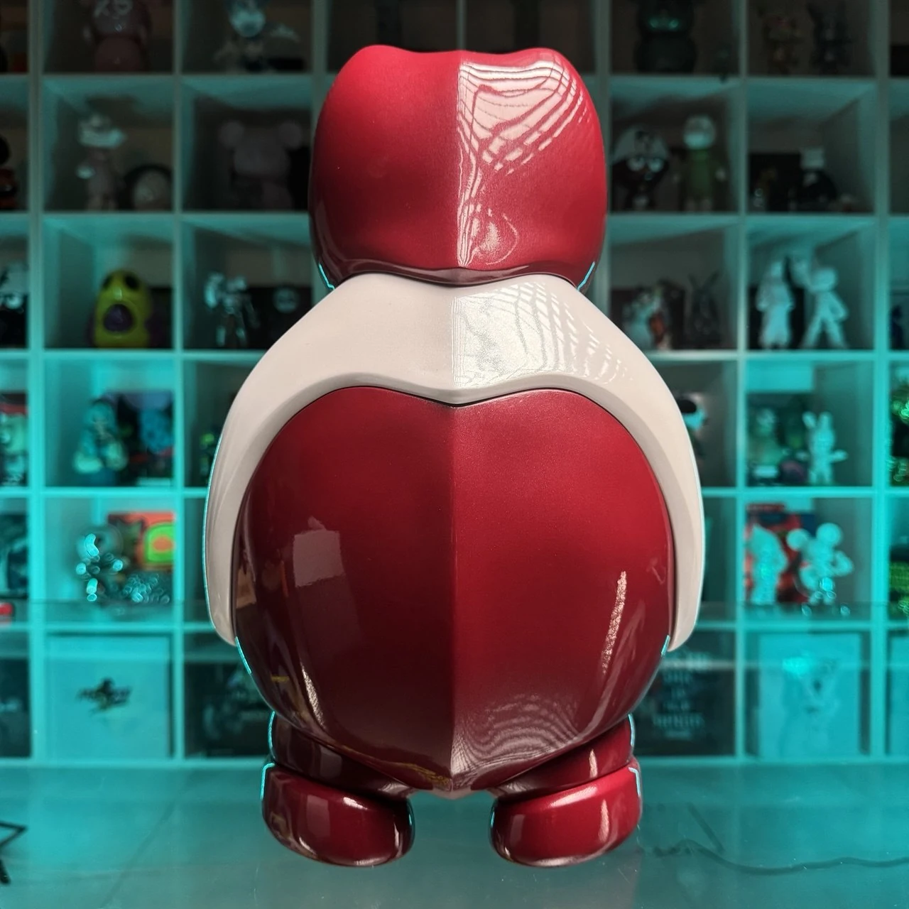
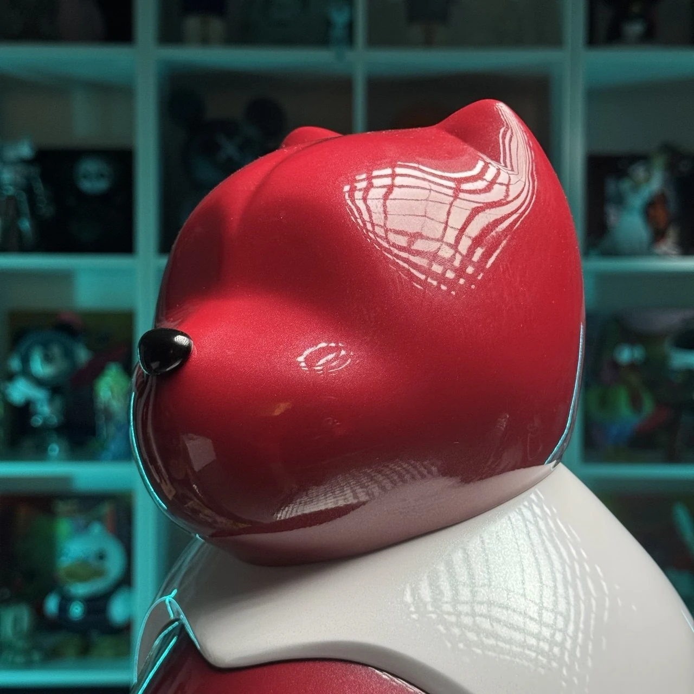
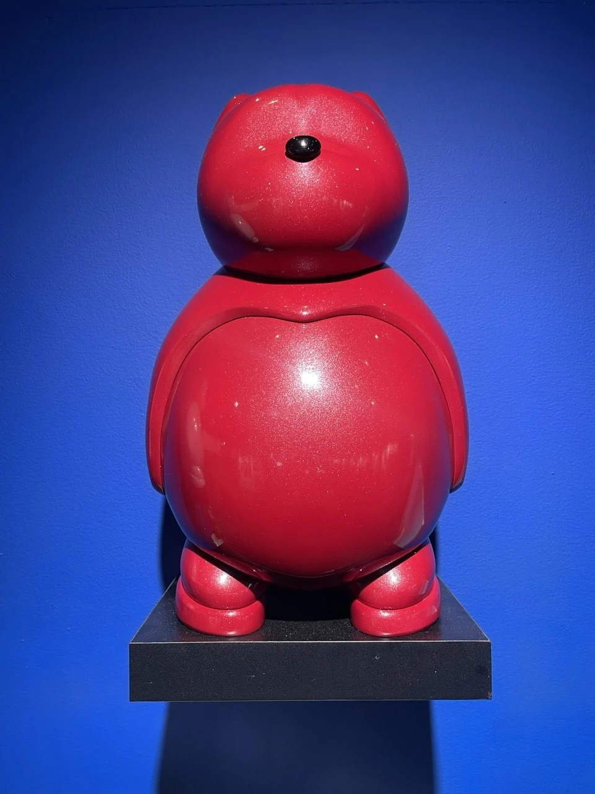
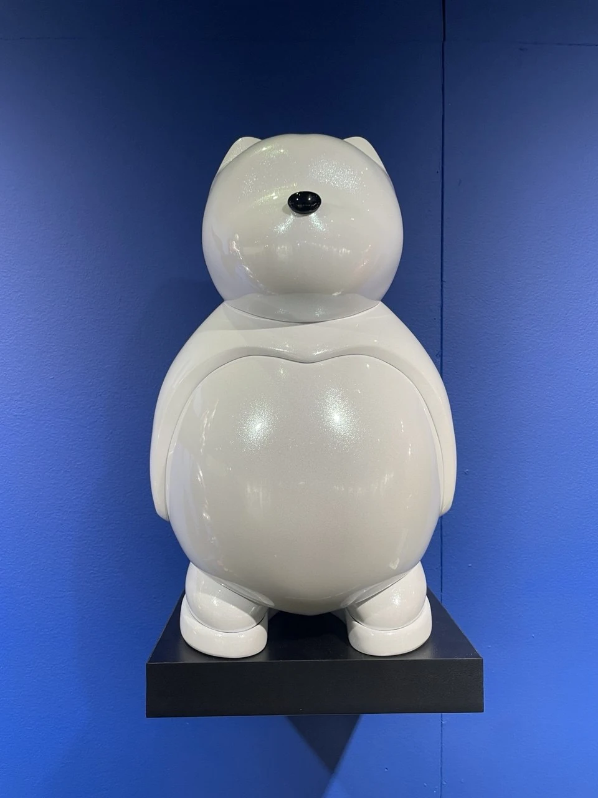
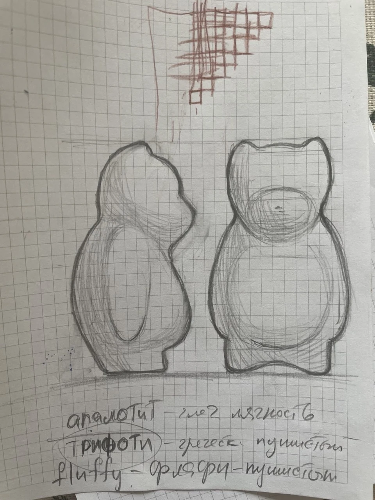

Скульптура
Медведь. С характером.
От первого рисунка до готовой скульптуры. Простой силуэт, узнаваемый нос и мягкая пластика превращают медведя в самостоятельный характер. В галерее — эскиз, исходная форма и несколько цветовых исполнений.
ТРИФОТИ / Фирменный персонаж
Персональные роли участников в этом кейсе не уточнены.
Материалы проекта
9 фото · 1 видео. Видео запускается только вручную.









Исходное видео — новая вкладкаЭтот кадр в галерееБез загрузки медиа